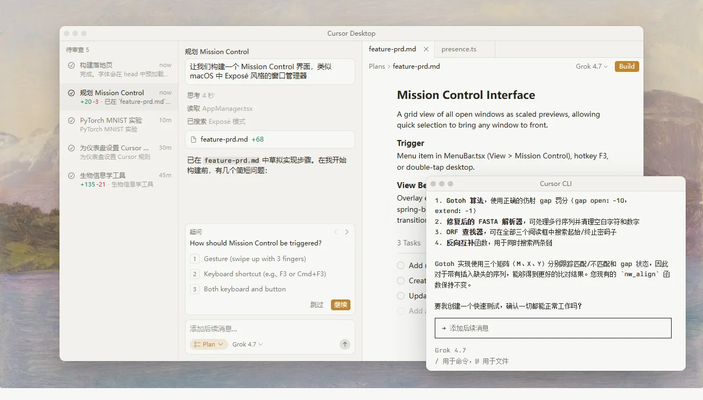
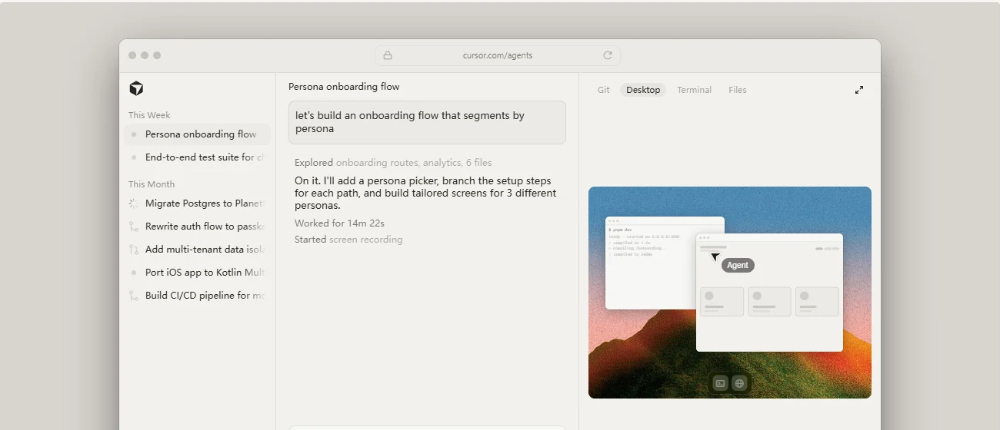
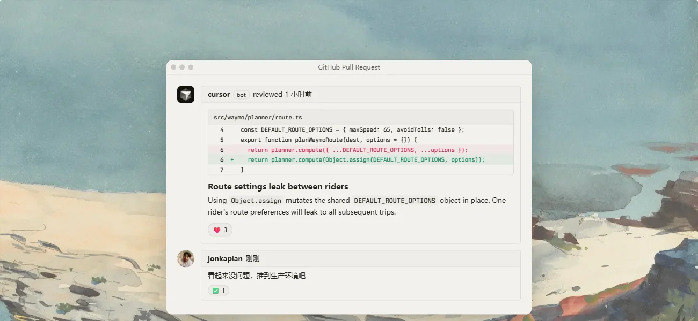
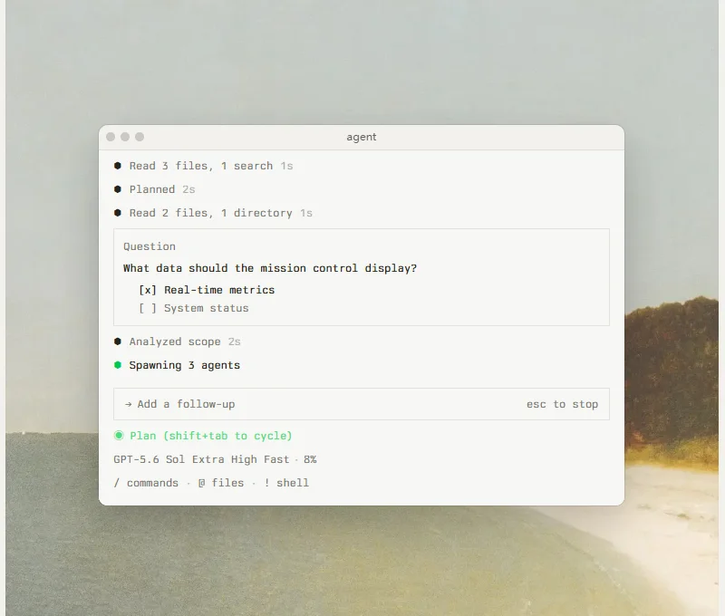
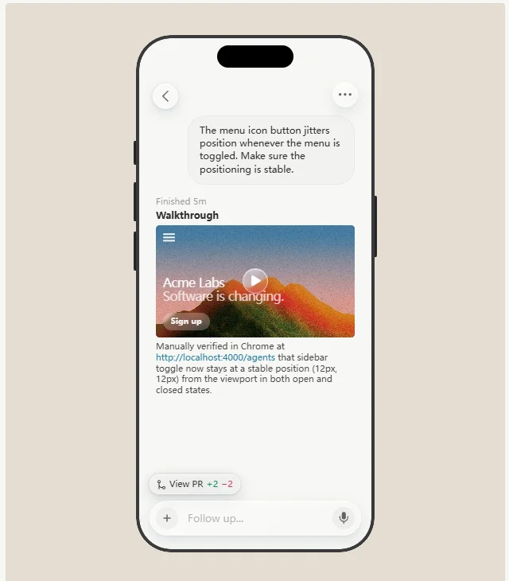
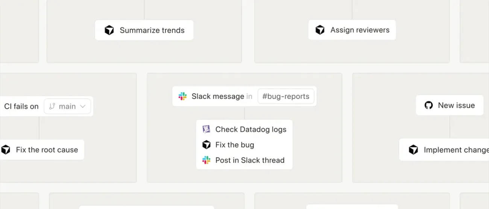
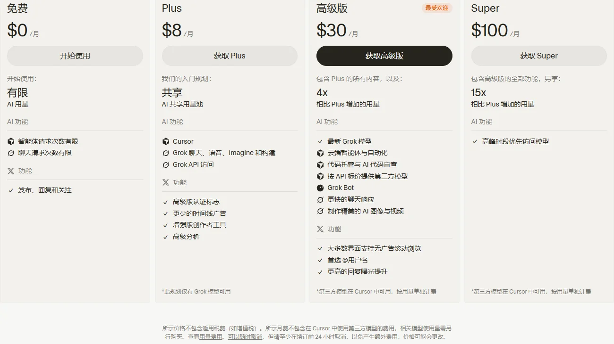

CursorAnysphere · 现为 SpaceX 全资子公司
曾经最火的 AI 编辑器，被 SpaceX 以 600 亿美元收购后，正从“多模型中立的工具”变成“Grok 生态里的开发者入口”。
一页结论
- 身份变了：2026-08-14 起成为 SpaceX 全资子公司、并入 SpaceXAI；10 月 12 日起新用户只能购买 X Subscription，Cursor 和 Grok、X Premium 共用一个套餐S5S10S1
- 从多模型中立转向 Grok 优先：默认模型换成与 SpaceXAI 联合训练的 Grok 4.7；新套餐不再包含第三方模型额度，Claude、GPT、Gemini 改为按 API 价另付；OpenAI 宣布 11 月 12 日起停止供应模型S3S2S12
- 收入增长极快，企业是主力：年化收入从 2025 年 1 月的 1 亿美元涨到 2026 年 5 月的 30 亿美元；2026 年初企业客户约占收入六成S14S13
- 开发者使用率被拉开：JetBrains 调研中，Cursor 在工作中的使用率从 1 月的 18% 降到 5～7 月的 12%；同期 Claude Code 从 18% 升到 39%S15
- 产品边界向软件交付全链路扩张：在编辑器之外，陆续推出云端 Agent、Projects、代码托管 Origin、代码审查与部署监控、Agent SDKS4S6S16
01公司介绍
| 项目 | 内容 |
|---|---|
| 公司 | Anysphere, Inc.，产品名 Cursor；2026-08-14 起为 SpaceX 全资子公司，并入 SpaceXAIS5 |
| 官网 | cursor.com（文档 cursor.com/docs）S8 |
| 总部 | 美国旧金山S14 |
| 创立 | 2022 年，四位 MIT 学生 Michael Truell（CEO）、Sualeh Asif、Arvid Lunnemark、Aman Sanger 创立；Lunnemark 于 2025 年 10 月离开S14 |
| 团队 | 约 300 人（2025 年 8 月）；收购后的人数未披露S14 |
| 主营 | AI 编辑器与编程智能体，延伸到云端 Agent、代码托管、代码审查和办公 Agent（Grok Bot）S8S9 |
02公司战略
不到四年，从种子轮走到 600 亿美元的收购价；收购后成为 SpaceXAI 面向开发者的产品线。
| 项目 | 内容 |
|---|---|
| 融资 | 2023-10 种子轮 800 万美元（OpenAI Startup Fund 领投）；2025-06 C 轮 9 亿美元，投后估值 99 亿；2025-11 D 轮 23 亿美元，估值 293 亿，Google、Nvidia 参投S14 |
| 收购 | 2026-04-21 SpaceX 获得以 600 亿美元收购的权利；06-16 宣布行权，全股票交易；08-14 完成，成为 SpaceX 全资子公司并入 SpaceXAIS11S14S5 |
| 并购 | Supermaven（2024-11，代码补全）、Graphite（2025-12，代码审查）、Firetiger（2026-08）S14S19 |
收购之后的战略主线很清楚：Cursor 不再只是一家独立工具公司，而是 SpaceXAI 面向开发者的产品线——帮 Grok 模型拿到编程场景的真实用户和数据，再用 X Subscription 的大众用户池给 Cursor 导流S5S10。
03产品定位
| 项目 | 内容 |
|---|---|
| 一句话定位 | 官网：“Cursor 是您的编程智能体，助您构建雄心勃勃的软件”S8 |
| 目标用户 | 职业开发者与企业工程团队；企业页称 64% 的财富 500 强在用（官方自述）S8 |
| 核心场景 | 理解代码库、规划和开发功能、定位修复 bug、审查改动；长周期的功能开发和代码迁移交给 ProjectsS6 |
| 新增场景 | 通过同一套餐里的 Grok Bot，把 Agent 延伸到销售跟进、跨应用办公等非编程任务S9 |

04产品与主要功能
Cursor 已经从一个编辑器长成了一套“交互入口 → Agent → 模型 → 运行环境”的完整体系。用全系列统一的 12 项能力衡量，它的强项集中在编程与交付链路，办公能力主要靠捆绑的 Grok Bot。
产品架构
12 项能力评估
核心功能





截图来自 Cursor 官网产品页，2026-11-01。
| 产品 | 做什么 | 推出 |
|---|---|---|
| 编辑器 + Agent | 在本地代码库里规划、编写、运行和验证改动 | 起家产品S8 |
| 云端 Agent | 在云端机器上长时间运行，支持可分享的交互画布；单个环境最多 300 个仓库 | 2026-10 更新S4 |
| Projects | 协调 Agent 调度多个 Agent 完成功能开发、迁移和日常维护；官方称主力用户合并的 PR 是普通用户的 6 倍 | 2026-09 betaS6 |
| Origin | 代码托管：仓库、PR、浏览代码、与 GitHub 同步 | 2026-08 早期 betaS16 |
| Bugbot / Security Review / Rollouts | PR 审查、漏洞标注、部署健康监控 | 2025-07 起S14S4 |
| Agent SDK | 把 Agent 写成代码项目，用评测测试，部署到 Cursor 或自有基础设施 | 2026-10-20S4 |
| 自研模型 | Composer 2.5；与 SpaceXAI 联合训练的 Grok 4.5 / 4.6 / 4.7 | 2026-05 起S3 |
05商业模式
最大的变化：Cursor 不再单独售卖，新用户统一购买 X Subscription。

| 变化 | 旧 Cursor 套餐 | X Subscription |
|---|---|---|
| 对应档位 | Pro $20 / Pro+ $60 / Ultra $200 / Teams $40 起 | Premium $30 / Super $100 / Ultra $200 / Teams $30 起S2 |
| 自家模型用量 | 每月两个用量池 | 每周一个用量池，与 Grok 产品共享；同档至少为旧套餐 2 倍S2 |
| 第三方模型 | Pro 及以上含第三方模型额度 | 不含，Premium 及以上按 API 标价从预付余额扣S2 |
| 超额计费 | 按需用量，月底后付 | 预付充值，可自动充值S2 |
| 入门档 | Hobby 免费 | Plus $8 只能用 Grok 等自家模型，无云端 Agent、Bugbot、OriginS3 |
老用户可以保留原套餐，切换到 X Subscription 是自愿且不可逆的S2。
| 自家模型 | 输入 | 输出 | 说明 |
|---|---|---|---|
| Grok 4.7 | $2 | $6 | 与 SpaceXAI 联合训练；超过 256k 上下文按 2 倍计费S3 |
| Composer 2.5 | $0.5 | $2.5 | Cursor 自研，2026-05 发布S3 |
单位：美元 / 百万 token。
收入结构的含义：旧模式下，用户付给 Cursor 的钱有相当一部分要转付给 Anthropic、OpenAI 等模型厂商；新模式把第三方模型推到“另付费”，把套餐内用量留给自家的 Grok 和 Composer，毛利结构和对上游的依赖都会随之改变（分析意见）。
06上下游与渠道
对软件型 Agent 来说，“上游”是模型和算力，“下游”是销售渠道和生态伙伴。Cursor 的关键变化都发生在上游。
07市场表现
08用户口碑
以下来自 Hacker News 近 90 天的高分讨论（C 级来源，只反映社区情绪，不作为事实依据）。
09安全合规
| 项目 | 内容 |
|---|---|
| 认证 | SOC 2 Type II、ISO/IEC 27001:2022、ISO/IEC 42001:2023、AIUC-1（Agent 安全与可靠性）S7 |
| 隐私模式 | 开启后不使用用户数据训练，免费版和付费版都可开启S7 |
| 基础设施 | 官方声明不使用中国境内的基础设施或总部在中国的公司S7 |
| 企业管控 | SSO / SCIM、审计日志、MDM 部署、客户自管密钥（CMEK）S7 |
| 近期事件 | 2026-10-29 通告：Cursor 扩展市场出现被篡改的 Claude Code 扩展（2.1.312、2.1.313）S19 |
待观察：安全页列出了 Grok 与 SpaceXSI 的订阅条款，但没有说明收购后数据如何在 Cursor 与 SpaceXAI 之间流转S7。这正是社区讨论里最集中的顾虑。
10近期动态
11潜在风险分析意见
| 风险 | 表现 | 可能程度 |
|---|---|---|
| 上游断供扩散 | OpenAI 已宣布停止供应；若其他模型厂商跟进，多模型卖点将进一步削弱S12 | 中 |
| 用户流失 | 职业开发者使用率已从 18% 降到 12%；套餐迁移后第三方模型另付费，重度用户成本上升S15S2 | 高 |
| 信任与隐私 | 代码托管与数据归属马斯克旗下公司引发社区担忧；安全页未说明收购后的数据边界S17S7 | 中 |
| 模型能力绑定 | 套餐内只含自家模型，Grok 编程能力若落后，产品体验直接受影响S3 | 中 |
| 供应链安全 | 扩展市场曾出现被篡改的第三方扩展S19 | 中 |
| 品牌定位稀释 | 专业工具放进大众社交订阅，可能影响企业客户对产品定位的判断（分析意见） | 中 |
“可能程度”为基于现有公开信息的判断，不是量化预测。
12综合结论分析意见
优势
- 编辑器体验与企业渗透，收入规模在同类独立产品中领先
- 多端与交付链路最完整：编辑器、云端 Agent、托管、审查、部署监控
- 有 SpaceXAI 的算力和联合训练的自家模型
劣势
- 职业开发者使用率下滑，被模型厂商自带的 Agent 拉开
- 长期依赖第三方模型，自研模型底座透明度受质疑
机会
- X Subscription 的大众用户池带来新流量
- Grok Bot 把 Agent 延伸到非工程岗位
- 企业从“写代码”到“交付软件”的全链路采购
威胁
- OpenAI 断供，其他模型厂商可能跟进
- 用户对马斯克生态的数据与隐私顾虑
- Claude Code、Codex 等模型厂商产品持续挤压
对 AI 产品团队的启示
- 不掌握模型的 Agent 产品，最大的风险在上游：供给可以被一纸通知切断。要尽早准备多供应商和自有或开源模型兜底。
- 订阅合并是用用户池换增长：把专业工具捆进大众订阅，能换来流量，但会稀释专业定位。定价要分清专业用户和大众用户各自买的是什么。
- 竞争单位从功能变成工作流：托管、审查、部署、定时任务都在往同一个产品里收。规划路线图要按完整工作流来排，而不是单点功能。
- 透明是信任资产：模型来源、数据去向要主动说明，被用户自己发现的代价远高于提前披露。
信息缺口
以下信息未找到可靠的公开来源，本报告不做推测。
- Cursor 的月活、付费用户数，官方从未披露
- 收购完成后的收入：有媒体称 2026 年 6 月年化收入超过 40 亿美元，但未找到可追溯的原文，未采用
- OpenAI 断供在 11 月 12 日前是否达成新协议，截至调研日未见公开信息
- Composer 2.5 的训练底座与训练细节
- 老用户迁移到 X Subscription 的比例、Origin 与 Grok Bot 的用户规模
- 收购后 Cursor 与 SpaceXAI 之间的数据使用边界
来源
A 官方 · B 权威媒体或第三方 · C 社区（仅用于口碑与线索）。访问日期均为 2026-11-01。
- S1 · ACursor 定价页Cursor
- S2 · ALegacy Cursor plans（旧套餐与 X Subscription 对照）Cursor 文档
- S3 · AModels & PricingCursor 文档
- S4 · ACursor 更新日志Cursor · 2026-09-23 至 2026-10-20
- S5 · ACursor is now a part of SpaceXCursor 博客 · 2026-08-14
- S6 · AIntroducing ProjectsCursor 博客 · 2026-09-10
- S7 · ASecurityCursor
- S8 · ACursor 官网与企业页Cursor
- S9 · AGrok BotCursor 文档
- S10 · AIntroducing The X SubscriptionSpaceXAI（x.ai） · 2026-10-12
- S11 · BSpaceX to acquire the AI coding startup Cursor for $60 billionCNBC · 2026-06-16
- S12 · BOpenAI to end model access to Cursor after acquisition by Elon Musk's SpaceXCNBC · 2026-08-29
- S13 · BCursor Recurring Revenue Doubles in Three Months to $2 BillionBloomberg · 2026-03-02
- S14 · BAnysphere（汇总 TechCrunch、Bloomberg、SEC 8-K 等报道）Wikipedia
- S15 · BAI Coding Agents: Adoption TrendsJetBrains Research · 2026-08
- S16 · BCursor launches Origin code hosting service to compete with GitHubSiliconANGLE · 2026-08-17
- S17 · CHacker News 讨论：OpenAI 的决定 / Origin / 并入 SpaceXHacker News · 2026-08 至 2026-10
- S18 · BCursor admits Composer 2 is based on KimiGIGAZINE · 2026-03-23
- S19 · ACursor 博客（Grok 4.7、Firetiger、安全通告、客户故事）Cursor 博客 · 2026-08 至 2026-10
- S20 · ACursor Router（Auto 模型路由）Cursor 文档
- S21 · ASelf-Hosted Machines（云端 Agent 跑在自管机器）Cursor 文档
- S22 · ACursor 产品页：Cloud / Bugbot / Mobile / CLI / AutomationsCursor